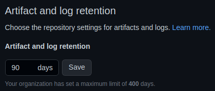

Integración continua
Una vez confirmados los cambios en el repositorio Git, lo siguiente es empezar con la automatización del resto de prácticas de DevOps. En esta lección, vamos a describir detenidamente el concepto de integración continua y cómo llevarla a cabo con GitHub Actions.
Al finalizar, sabrá:
-
Qué es la integración continua.
-
Qué son y por qué se usan las políticas de calidad y los estándares de código.
-
Qué es y para qué se usa el análisis estático de código.
-
Qué son y para qué se usan las pruebas de unidad.
-
Qué son los artefactos y qué acciones de GitHub Actions podemos usar para trabajar con ellos.
-
Cuáles son los permisos más habituales a asociar a los flujos de integración continua.
Introducción
La integración (integration) hace referencia a la compleción de algo con cosas faltantes, es decir, llevar a cabo algunas cosas que faltan para, así, terminar el todo en el que estamos trabajando. La integración continua (CI, continuous integration) no es más que una práctica que tiene como objeto realizar determinadas tareas faltantes, de manera automática, principalmente después de cada cambio realizado en una rama, como mínimo, la principal. Su objetivo es detectar fallos en cualquiera de los pasos automatizados para, así, pasar a corregirlos de inmediato. Los fallos detectados deben corregirse lo más rápidamente posible, no se deben dejar para más tarde, por ejemplo, para el momento del despliegue, porque incrementará el estrés y dificultará su resolución. Groso modo, abarca la compilación del código, la ejecución de pruebas y algunas tareas de comprobación de calidad.
La integración continua se realiza mediante una plataforma específica, en nuestro caso, mediante GitHub Actions, más concretamente mediante flujos de trabajo que se ejecutan automáticamente cuando se realiza alguna operación de fusión de cambios con alguna rama del proyecto.
La integración continua es uno de los pilares de DevOps y consiste básicamente en:
-
Clonar el repositorio Git del proyecto.
-
Instalar las dependencias del proyecto.
-
Realizar el análisis de código estático para llevar a cabo una primera comprobación y cumplimiento de los estándares de calidad.
-
Compilar en limpio el código fuente.
-
Ejecutar la batería de pruebas automatizadas.
-
Almacenar los informes generados por las pruebas si fuese necesario.
Todas estas tareas se pueden automatizar y se llevan a cabo mediante un flujo de trabajo. Y todo ello, de manera automática y sin necesidad de intervención manual. Por ello, la integración continua presenta las siguientes ventajas:
-
Mejora la productividad del equipo de desarrollo, porque les libera de tener que hacer estas tareas manualmente.
-
Mejora la calidad del software, porque realiza un análisis de código para validar que cumple con nuestros estándares y, por otra parte, ejecuta la batería de pruebas para garantizar que no se ha roto nada con el nuevo cambio.
Cada persona del equipo de desarrollo trabaja aisladamente con su propio equipo y entorno. Es posible que un cambio realizado en el proyecto lo realice localmente y se le olvide actualizar las dependencias del proyecto. En ocasiones, algo que funciona en Windows puede no hacerlo en Linux y viceversa. Por esta razón, y debido a que las personas cometemos errores, es algo inevitable, necesitamos algún mecanismo que ayude a detectar problemas cuando integramos nuestros cambios en el repositorio. Esto se detectará con el flujo de CI. Si algo va mal, este flujo lo detectará y, entonces, tendremos que resolverlo y volver a confirmar los cambios para que se ejecute, de nuevo, el flujo de trabajo. Y si todo va bien, podemos dar por cerrado el problema. Si se da cuenta, la ejecución automática de las pruebas ayuda a detectar problemas rápidamente.
La idea es garantizar que los cambios realizados por un miembro del equipo no rompen nada y las pruebas pasan al completo. La integración continua ayuda a mantener las ramas principales actualizadas y sin fallos producidos por la integración de cambios.
Ya no hay que esperar al día del despliegue o publicación, y añadir así un nivel de estrés extra. El problema se detecta con el commit o el merge que lo genera y requiere que lo resolvamos de inmediato. No deje para el último día las combinaciones de ramas. En ese caso, el beneficio de CI desaparece y el estrés aparece. En algunas organizaciones, la aprobación y la combinación de ramas son cuellos de botella muy grandes que ralentizan el proceso y generan estrés innecesariamente cuando la fecha de entrega se acerca.
La idea es trabajar en pequeños conjuntos de cambios para reducir el tiempo de espera (lead time), la cantidad de tiempo que transcurre desde que un desarrollador se pone a trabajar en una nueva funcionalidad y ésta se despliega en producción. Tenemos que conseguir que sea lo más pequeño posible. Además, al trabajar en pequeños lotes, reducimos los riesgos, la sobrecarga y los costes. Pero para conseguirlo, es necesario que tengamos nuestro proceso automatizado todo lo posible. Si requiere intervención manual, lo que estaremos haciendo es dejar de desarrollar para atender esas tareas manuales. Algunas empresas que deciden desplegar cada semana o dos semanas con intervención manual dedican una parte muy alta de su trabajo a desplegar y resolver problemas durante los despliegues. Tiempo que deja de dedicarse al desarrollo de nuevas características y, por lo tanto, redunda en el producto.
Una herramienta de CI es aquélla que proporciona todo lo necesario para poder llevar a cabo las tareas de integración continua de manera automática. GitHub Actions así lo hace.
Flujo de trabajo de integración continua
Recordemos que un flujo de trabajo (workflow) no es más que un proceso automatizado. Al flujo dedicado a integración continua, se le conoce formalmente como flujo de integración continua (CI workflow). Podemos decir que si el flujo de integración continua se ejecuta sin problemas, la rama se encuentra en buen estado. Ahora bien, si alguno de sus trabajos falla, el cambio subido al repositorio de Git presenta algún problema que hay que resolver.
¿Qué problemas podríamos encontrarnos? Pues depende de cada proyecto. Vamos a enumerar algunos de ellos:
-
El código no compila correctamente. Imaginemos que el desarrollador subió un cambio con características del lenguaje de programación más actuales de las que se han configurado en el proyecto. O bien una violación de alguna regla de buenas prácticas fijada por la organización. También podría ser que el desarrollador haya instalado una dependencia para el proyecto, pero se le haya olvidado registrarla en el archivo de metadatos.
-
El componente no pasa alguna prueba de unidad. En ocasiones, una prueba puede funcionar en Linux, pero no en Windows, y viceversa. Detectarlo lo antes posible, gracias al flujo de CI, nos ayudará a implementar el código atendiendo al sistema operativo, cuando sea necesario.
-
El componente no pasa alguna prueba de rendimiento. Hay proyectos que requieren una muy buena calidad, la cual se mide en parte mediante pruebas de rendimiento como, por ejemplo, de carga o estrés.
Eventos de integración continua
Por lo general, los eventos que dispararán el flujo de integración continua suelen ser los de push o integración de cambios (pull requests). Cuando se utiliza el desarrollo troncal (trunked-based development) se suele asociar a la rama troncal, esto es, generalmente, main o master. Así pues, es muy habitual tener lo siguiente en el flujo de integración continua:
on:
push:
branches:
- main
pull_request:
branches:
- main
Evento push
Cada vez que se realiza un push o publicación en el repositorio, se produce un evento de tipo push. GitHub Actions permite que se ejecute los flujos de trabajo en estos casos. Para ello, hay que utilizar el evento push, el cual contendrá un objeto con las siguientes propiedades:
| Propiedad | Descripción |
|---|---|
| branches | Ramas en las que estamos interesados. |
| branches-ignore | Todas las ramas salvo las indicadas en esta propiedad. |
| tags | Etiquetas en las que estamos interesados. |
| tags-ignore | Todas las etiquetas salvo las indicadas en esta propiedad. |
| paths | Todo push que afecte a uno de los archivos indicados. |
| paths-ignore | Todo push que afecte a un archivo no indicado en esta propiedad. |
Si se indica paths, no se puede indicar también paths-ignore, y viceversa.
Cualquiera de las propiedades anteriores acepta comodines. He aquí un primer ejemplo ilustrativo:
on:
push:
branches:
- main # rama main
- dev/** # cualquier rama con el prefijo dev/
paths:
- "**.js" # cualquier push con cambios en archivos JavaScript
Y ahora otro extraído del proyecto Akromio que indica que sólo aquellos pushes que contengan cambios en archivos .js, .json o en el archivo .mocharc.yaml dispararán la ejecución del flujo de integración continua:
name: ci
on:
push:
branches:
- "**"
paths:
- "**.js"
- "**.json"
- "**/.mocharc.yaml"
jobs:
ci:
uses: akromio/github/.github/workflows/nodejs-ci.yaml@master
Para indicar todas las ramas, debemos usar dos asteriscos (**) como en el ejemplo anterior.
Evento pull_request
También es posible ejecutar los flujos de trabajo con eventos generados a partir de solicitudes de integración (pull requests). Hay varios tipos de eventos, pero el más usado es pull_request, por lo que nos centraremos en este.
Este evento debe contener un objeto con las siguientes propiedades:
| Propiedad | Descripción |
|---|---|
| branches | Ramas en las que estamos interesados. Ídem al evento push. |
| branches-ignore | Todas las ramas salvo las indicadas en esta propiedad. Ídem al evento push. |
| types | Estados en los que estamos interesados: opened, closed, locked, etc. |
| paths | Ídem a la propiedad homónima del evento push. |
| paths-ignore | Ídem a la propiedad homónima del evento push. |
Ejemplo:
on:
pull_request:
branches:
- main
types:
- closed
Políticas de calidad
Las organizaciones más exigentes suelen disponer de políticas de calidad (quality policies) que fijan la calidad esperada de su código y software. Entre otras, debe disponer de un estándar de código con el que poder medir, en primera instancia, la calidad del código desarrollado por el equipo.
Estándares de código
Un estándar de código (code standard) es un norma que sirve como referencia a seguir, por todo el equipo, para mejorar la apariencia y calidad de nuestro código. Algunas industrias como, por ejemplo, la médica, la nuclear y la de aviación, incluso obligan, en ocasiones, a usar este tipo de estándares.
Estos estándares se definen mediante reglas que todos debemos seguir. Entre otras podemos encontrar:
-
El tamaño máximo de línea.
-
El número máximo de parámetros que pueden tener las funciones.
-
El uso de comentarios de documentación.
-
El uso de convenios de nombres para las variables, las clases, los tipos, las funciones, etc.
Para comprobar que nuestro código cumple con los estándares de la organización, se realiza, en primer lugar, un análisis estático de código (static code analysis), esto es, un estudio del código sin realizar ningún tipo de ejecución con el objeto de:
-
Validar que el código cumple con los estándares de código de la organización.
-
Localizar código con problemas de seguridad.
-
Localizar código ineficiente o de mala calidad.
-
Comprobar que no se usan funciones o tipos obsoletos.
Las herramientas que realizan estos análisis se conocen formalmente como analizadores estáticos (static analyzers) o analizadores estáticos de código (static code analyzer). En Node.js y/o TypeScript, por ejemplo, se suele usar ESLint; mientras que en Go, Staticcheck, gofmt y go vet.
Pruebas de unidad
Durante la fase de integración continua, se ejecutan las pruebas de unidad (unit tests), las cuales debemos haber automatizado mediante el uso de algún framework de pruebas. El objeto de estas pruebas es comprobar que los componentes de software que hemos desarrollado hacen lo que se espera de ellos. Una de sus principales métricas es la cobertura de código (code coverage) que mide la cantidad de código accedido durante las pruebas. Lo ideal es alcanzar el cien por cien de cobertura, lo que proporciona un nivel de calidad alto. Esto no significa que el código sea perfecto, puede presentar fallos de todas formas, pero sí que tiene menos fallos proporcionando un mayor grado de confianza que si no fuera del cien por cien.
Los frameworks de pruebas más utilizados en Node.js y/o TypeScript son Jest y Mocha; en Go, el módulo testing de la biblioteca estándar.
En la integración continua, por lo general, las pruebas se ejecutan en distintos entornos o sistemas operativos para garantizar así que el software puede funcionar en todos ellos. No basta con que elijamos un único sistema operativo, hay que hacer que se ejecute en todas las plataformas en las que deseamos funcione nuestro software. Que mejor lugar para hacer esto que en una plataforma de integración continua como GitHub Actions que tiene la capacidad de ejecutar lo que le pedimos con distintos sistemas operativos.
Artefactos
Un artefacto (artifact) es algo producido por un flujo de trabajo como, por ejemplo, un binario, una imagen, un archivo de texto, una página web, etc. Por ejemplo, si estamos programando en Go, un flujo de trabajo podría generar un binario para cada plataforma. A cada uno de esos binarios, se le conoce formalmente como artefacto porque se han generado durante el flujo de trabajo. En integración continua, un artefacto podría ser el informe con el resultado de la ejecución de las pruebas que algunas organizaciones almacenan internamente. Los artefactos se pueden generar en cualquier fase del ciclo de desarrollo.
Estos artefactos no se mantienen en la máquinas virtuales donde se ejecutan los trabajos, sino en un almacenamiento especial proporcionado por GitHub conocido formalmente como almacenamiento de artefactos (artifact storage). Esto se debe a que si se almacenase en la máquina virtual o en el contenedor donde se ejecuta el trabajo, el artefacto dejaría de estar disponible una vez terminado este. La idea es que un artefacto pueda ser usado por otro trabajo del mismo u otro flujo de trabajo, en el presente o en el futuro.
Debe considerar un artefacto como un componente de salida generado por un flujo de trabajo. Y el almacén como un repositorio en el que guardarlos y al que pedírselo para su utilización.
Los artefactos se mantienen un tiempo, no son eternos. En la capa gratuita, de manera predeterminada, durante 90 días. Aunque los recursos sean gratuitos, ajústelos a lo que realmente necesite. Por ejemplo, en el proyecto Akromio, se ha bajado a 30 días para reducir los recursos gratuitos proporcionados por GitHub, ya que con ese intervalo es suficiente.
Acción actions/upload-artifact
Para subir un artefacto al almacén de artefactos, debemos utilizar la acción actions/upload-artifact, la cual espera sus argumentos en la propiedad with:
| Propiedad | Descripción |
|---|---|
| name | Nombre del artefacto. |
| path | Ruta(s) donde se encuentran localmente el o los artefactos. Pueden ser directorios y/o archivos. |
| retention-days | Número de días a retener el artefacto. Si no se indica, se usará lo configurado en el repositorio. |
| if-no-files-found | Qué hacer si no se encuentra el artefacto a guardar: error, generar un error; warn, generar un aviso; o ignore, no hacer nada. |
Vamos a ver un ejemplo:
- name: Almacenamiento del artefacto
uses: actions/upload-artifact@v3
with:
name: webpack artifacts
path: public/
Acción actions/download-artifact
Para descargar un artefacto del almacenamiento de artefactos, podemos usar la acción actions/download-artifact. La lista de propiedades de with son:
| Propiedad | Descripción |
|---|---|
| name | Nombre del artefacto a descargar. Si no se indica, se descargarán todos los artefactos. |
| path | Ruta local donde descargarlo. Si no se indica, se usa el directorio actual. |
Ejemplo:
- uses: actions/download-artifact@v3
with:
name: webpack artifacts
path: public
Opción de configuración Artifact and log retention
En la configuración general de GitHub Actions, ubicada en la pestaña Settings > Code and automation > Actions > General del repositorio, podemos encontrar el periodo de retención predeterminado de los artefactos. Se encuentra bajo Artifact and log retention:

Puede fijar ahí el número de días que se mantendrán los artefactos y los logs.
Permisos del flujo de integración continua
No hay que olvidar seguir el principio de menor privilegio en cada flujo de trabajo. Generalmente, al flujo de integración continua le basta con el permiso de lectura de contenido, pues no suele hacer cambios al código fuente, sólo probarlo. Por esta razón, este tipo de flujos suele tener la siguiente propiedad permissions:
permissions:
contents: read
Ejemplos de flujos de integración continua
A continuación, vamos a presentar unos flujos de integración continua de ejemplo que le servirán como punto de partida. Por un lado, mostraremos uno típico de un proyecto Node.js y, por otra parte, uno de Go. Si su proyecto tiene varios repositorios, no descarte crearlos como flujos reutilizables.
Flujo de integración continua de Node.js
name: CI
on:
push:
branches:
- master
pull_request:
branches:
- master
permissions:
contents: read
defaults:
run:
shell: bash -e {0}
jobs:
runTests:
name: Node.js ${{ matrix.node }} on ${{ matrix.os }}
runs-on: ${{ matrix.os }}
strategy:
matrix:
node: [16.x, 18.x]
os: [ubuntu-latest, windows-latest]
steps:
- uses: actions/checkout@v3
- name: Node.js ${{ matrix.node }}
uses: actions/setup-node@v3
with:
node-version: ${{ matrix.node }}
- name: Install dependencies
run: npm ci -ws --include-workspace-root
- name: Run tests
run: npm run cov
Flujo de integración continua para Go
name: CI
on:
push:
branches:
- master
pull_request:
branches:
- master
permissions:
contents: read
defaults:
run:
shell: bash -e {0}
jobs:
runTests:
name: Go ${{ matrix.go }} on ${{ matrix.os }}
runs-on: ${{ matrix.os }}
strategy:
matrix:
go: [1.19]
os: [ubuntu-latest, windows-latest]
steps:
- uses: actions/checkout@v3
- name: Go ${{ matrix.node }}
uses: actions/setup-go@v3
with:
go-version: ${{ matrix.go }}
- name: Lint
if: runner.os == 'Linux'
run: |
files=$(gofmt -l -w .)
if [ "$files" != '' ]; then
printf "The following files have been modified: ${files/$'\n'/, }\n"
exit 1
fi
- name: Build
run: |
for module in ./modules/*; do
go build -v $module
done
- name: Tests
run: |
# (1) run tests
error=0
for module in ./modules/*; do
coverage=$(go test $module/... -covermode count -coverprofile coverage | grep -v 'coverage: 100.0%' | cat)
if [[ "$coverage" != "" ]]; then
error=1
go tool cover -func=coverage | grep -v "100.0%"
fi
done
# (2) return exit code
exit $error